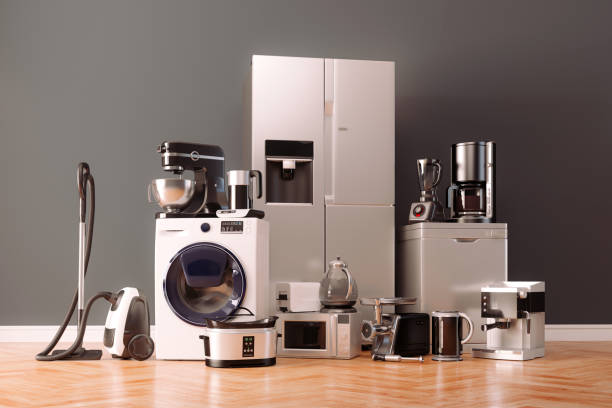
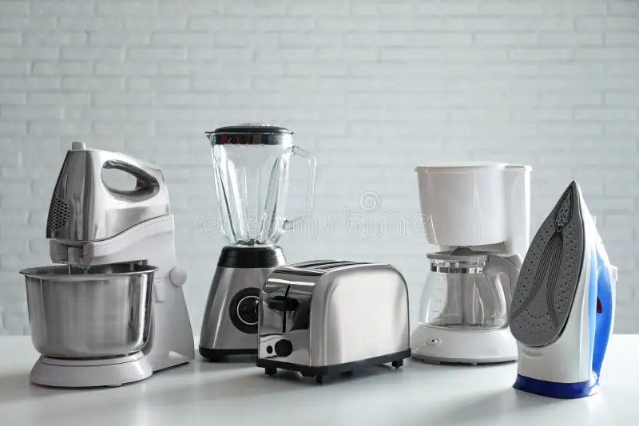

Servicio Técnico Álvarez
Servicio Técnico Álvarez
Somos un emprendimiento familiar, nos dedicamos a la reparación y mantenimiento de equipos electrónicos del hogar.
Contamos con años de experiencia brindando confianza, puntualidad y garantía en cada trabajo directo en tu domicilio o en nuestro local.
Solicitar Técnico
Reparación y mantenimiento preventivo de lavadoras, refrigeradoras, secadoras y lavavajillas de todas las marcas.

Soporte técnico especializado para hornos microondas, cocinas eléctricas, licuadoras industriales y cafeteras.

Mantenimiento integral, limpieza de filtros y recarga de gas para sistemas de aire acondicionado y estufas eléctricas.